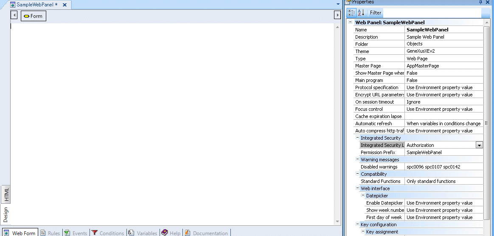
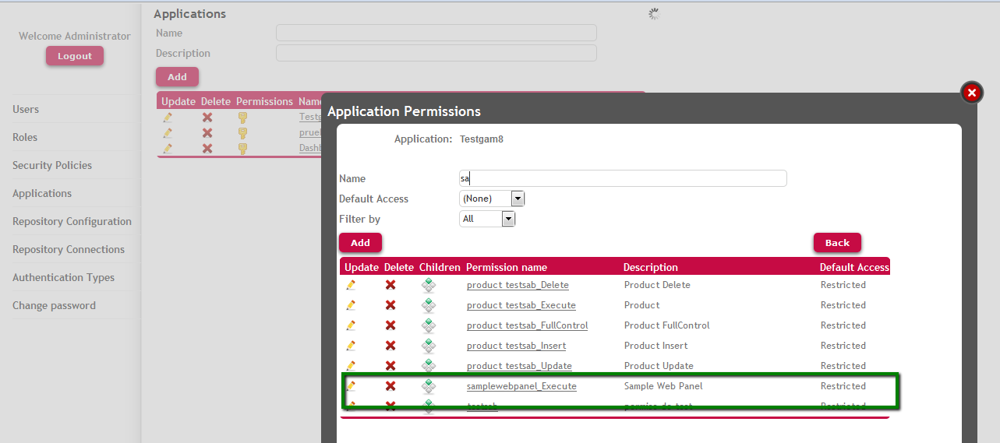
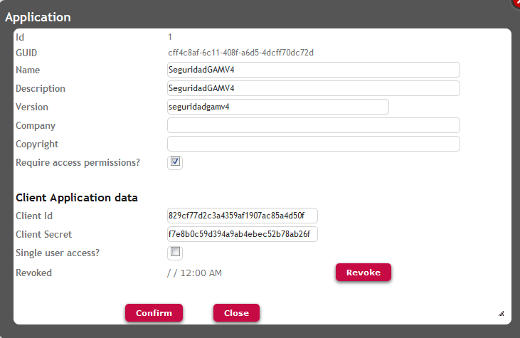

HowTo: GAM Automatic Check of Access Permissions for Web Objects
Problem to solveOnly some users will have access rights to the execution of a web page (web objects with URL access; that is, web panels, web transactions, web components with URL Access property set to Yes). It also includes Soap and REst web services. How to solve it1. Integrated Security Level Property must be set to "Authorization" value (at version level, or at object level). In the following example it's set at version level, and at object level the property is set to "Use Environment property value". Define Permission Prefix Property for this web object.  Figure 1.2. Check that the permission (prefix_execute) has been created for the WEB application (it´s available at applications permissions list in GAM Backend)  Figure 2.3. Define a Role or edit an existing role and add the permission recently created. You need to select the application where the permission has been defined, and add this permission to the Role. Note that the access type of this permission will be "Allow" for this Role.
Figure 3.4. The user needs to be associated to this Role. Figure 4.Only users with this Role will have access rights to the "samplewebpanel" object. Note: When any object of the KB is configured with Integrated Security Level = Authorization, the property "Require Access Permissions" is automatically checked for the Application that the object belongs to; see the following figure:  Figure 5. "Require Access Permissions" application property.This property needs to be set in order that the permissions are generated for the application. See AlsoGAM Applications
|


| Backlinks |
| GAM Authorization Scenarios |